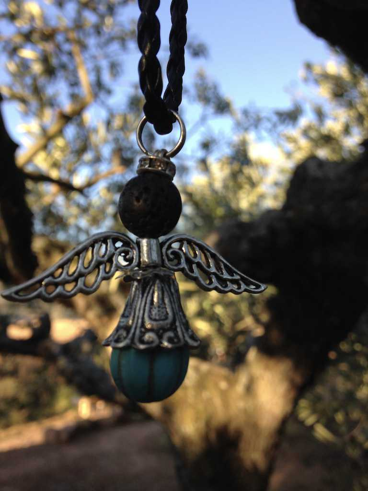

Superpowers
A dear friend and I send each other long voice messages when we want to update each other on our lives.
We’ve witnessed each other at both our best and our worst. We’ve made ourselves vulnerable and have held each other’s pain through difficult times. We’ve offered one another various philosophies on how to live, and we constantly redefine and expand each other’s emotional maps, which has deepened our sense of the sort of relationships that are possible between ourselves, others, and the world.
We’ve grown close to say the least, despite the literal ocean of distance between us. Perhaps what we have is because of it. Via Esther Perel:
“Love rests on two pillars: surrender and autonomy. Our need for togetherness exists alongside our need for separateness. One does not exist without the other.”
These paradoxical pillars of love extend to our friendships too. Distance and room for autonomy are necessary precursors for any thriving relationship.
Surrender is essential too. Surrendering to our desire to be with the other. Surrendering to the vulnerability that follows after expressing what one wants and what one needs. Surrendering to the fact that people change. Surrendering to the thought that this other person may be full of quirks and idiosyncrasies that drive us crazy at times. Surrendering to the realization that in this short blink of existence, this other person, for whatever creed or reason, has decided not to shy away from what they have seen in us too. Surrendering to the fact that they have deemed us worth the trouble. Surrendering to the love that follows.
After a long winter hiatus, my friend caught me by surprise with this message. I recall telling her a month ago that I was again in the middle of carving out a new path. I wasn’t sure what I was good at and could be good at and asked for her thoughts. Her response, slightly paraphrased:
“…what is your superpower? Your whole being is a cure for loneliness…truly. Like how you listen to people, it’s medicine for the soul. That deep understanding and great wish to understand the other. That supportive and positive state of mind you are in, the way you’re always smiling. And even when you are in a deep deep sadness, you can be at your best and cheer everybody up and pull them up to your level…it’s something which is really unique.”
Hearing her say that made me incredibly happy and worthy of something. It also made me realize how profoundly your simple presence can affect someone, and this was a clear sign I’d be a fool not to follow.
I started thinking about ways of using this superpower toward a lasting endeavor. I know myself well enough to realize that her words reflect something deep in me, something I want to use to make the world a better place. But as to what end, I’m unsure.
Perhaps I ought to turn my mind inward and listen to what may be echoing.
